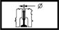

INLET VALVES
- Path
- Technical Data > Manufacturing data > 10 ENGINE > 1016 CYLINDER HEAD/S > INLET VALVES
- Kind
- technical data / specifications
- Applies to
- all engines; all production periods
- Interactive page
- https://sloeber94.github.io/elrnDB-a156/en/#/3233511
Applies to: all engines; all production periods
Clearance (mm) | Validity | |||
|---|---|---|---|---|
0.25 - 0.35 | 1.9 JTD 8v 2.4 JTD 10v | |||
Inlet stem diameter (mm) | Validity |  | ||
6.975 ÷ 6.990 | 1.8 TS [d] 1.6 TS | |||
Outer diameter (mm) (**) | Validity |  | ||
Category B | Category C | Classe A | ||
82.959 - 82.971 | 82.969 - 82.978 | 82.952 - 82.962 | [d] | |
Stem diameter (mm) | Validity | |||
|---|---|---|---|---|
5,982 ÷ 6,000 | 2.4 JTD 20v | |||